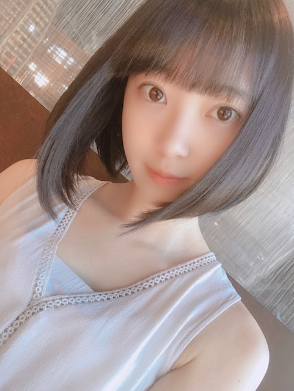
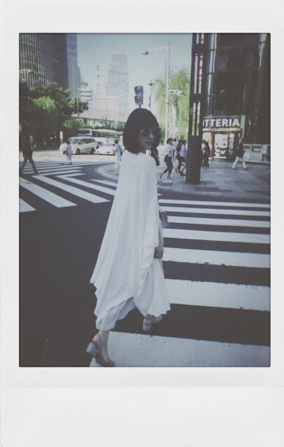
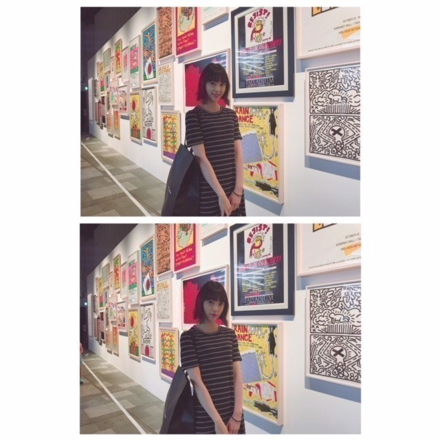
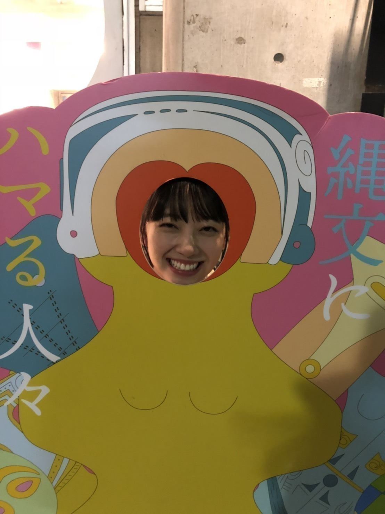

2018/0821Tue残してく。
突然ですが
プライベートの目標を発表します
それは...
いろんな温泉に行くこと！
お母さんや友達とたまに行くけどまだ未開拓な温泉地がたくさんあるから家族で行けたらいいな〜
おすすめの場所があったら教えて下さい！

お休みの日はメイクしない時とする時があって
(気分なのですが) この日はすっぴんdayでした
なんか、さっぱりしてる〜
この間自分でメイクをした日に松村さんに
まぶたキラキラだねー
撮影終わりかと思ったよーって言ってもらえて
嬉しかったな♡
アイシャドウは全体と二重幅の2色塗りがマイルールです！
近況
銀魂2を絢音とお仕事終わりに観てきました^^
始まってすぐからずっとお腹抱えて笑ってました...
本当に面白い！ムロツヨシさんと佐藤二郎さんは50回目のファーストキスに続き安定にドツボでした。苦しかったです、笑
ストーリーも涙ありで魅入りましたし
学生時代にアニメは少し観ていたのですが
全話制覇！では無かったので内容がちゃんと分かるか不安でした。でもわたしみたいに銀魂あまり詳しくない！という方でも100%楽しめますので
ぜひに。わたしはこれを機にアニメも最初からちゃんと観始めようと思いました...
橋本環奈さんはもちろんずっとかわいいけれど話し方、声が癒しすぎました
神宮ライブに来てくださっててトロッコから橋本環奈さんを見つけた時、えっっやはり凄くかわいいっってなったなぁ
あとは銀魂だとアニメの時から器用でさらっと頭のいい沖田総悟さんが気になっていたのですが(胸の内に秘めた熱意や根性が時たま男らしくてギャップです)
実写版映画でのあの電車のシーン...
破壊力が...すごくて。
吉沢亮さんの目のお芝居にも引き込まれました
殺意と決意が入り混ざっていて格好いいだけでは済まされず、わたしの語彙力が乏しくて申し訳ないです
絢音もすっごく楽しかったって言っていてね、
終わった後あーだこーだ焼肉を食べながら話しました。笑
映画 や 美術館 など
楽しみながら自分の身になるものや蓄えられるものを見つけられる趣味があることを嬉しく思います


9月のガールズアワードは
お仕事の都合で出られなくなりました。
今まで出させていただいていて毎回
楽しみにしていたので残念ですが...
わたしもお仕事、頑張ります。
そしてメンバーのランウェイを
携帯越しに見守っています。
そして...
乃木坂46
結成7周年 おめでとうございます
ありがとうございます 。笑
皆さんの温かく力強い支えがありきの私達です。
感謝の言葉だけでは伝えきれません
これからも乃木坂46の変化を成長を、一緒に楽しんでいただけたら嬉しいです
皆さんが大好き^^

では！
2018/08/21 18:48
コメント(850)
乃木坂４６結成７周年おめでとうございます！これからもよろしくお願いします。僕は関西人なのでやはり温泉と言えば有馬です。あの黄土色の湯はぜひ一度体験してみてほしいですね。今回もまた未央奈のその人柄が知れるような映画の感想が聞けて嬉しいです。最後のは話題の縄文展なのかな？かわいい素敵な笑顔ありがとうございます。未央奈のファンでよかった‥。
鹿児島の「霧島」と「指宿」ぜひ♪
遠いけど桃ちゃんとかにも聞いて観光がてら来てもらえると嬉しいです
遠いけど桃ちゃんとかにも聞いて観光がてら来てもらえると嬉しいです
スキーの帰りに寄った公衆浴場的な温泉
あれどこだったんだろう
山形県だったと思う
宮城は作並、秋保、鳴子があるよ
たまにふらっと行くけど温泉は入ったことなかったなあ
そして7周年おめでとう
ひとことで7年というけどこれはひとつの歴史
いろんなことがあったねえ
しみじみ
常に大きく変わりゆく世界の中で
これからも自分らしくがんばってください
あれどこだったんだろう
山形県だったと思う
宮城は作並、秋保、鳴子があるよ
たまにふらっと行くけど温泉は入ったことなかったなあ
そして7周年おめでとう
ひとことで7年というけどこれはひとつの歴史
いろんなことがあったねえ
しみじみ
常に大きく変わりゆく世界の中で
これからも自分らしくがんばってください
未央奈ブログ更新ありがとう！
温泉ね、リラックス出来るし楽しいよね！
おすすめは長野の野沢温泉や新潟の赤倉温泉かな♨
お湯も気持ちいいし、温泉街に美味しい物沢山あって楽しいよ！
銀魂2見たいんだよね～
凄い楽しみになってきた！
今週はサブ地元のナゴヤドームだね！
一緒に楽しもう！
温泉ね、リラックス出来るし楽しいよね！
おすすめは長野の野沢温泉や新潟の赤倉温泉かな♨
お湯も気持ちいいし、温泉街に美味しい物沢山あって楽しいよ！
銀魂2見たいんだよね～
凄い楽しみになってきた！
今週はサブ地元のナゴヤドームだね！
一緒に楽しもう！
ブログ更新、ありがとう。
乃木坂４６ 7周年おめでとうございます。
これからも、グループとしても、未央奈さん自身も、益々多くの人に愛されますよう、お祈り申し上げます。
温泉。
栃木県の湯西川（ゆにしがわ）温泉や、長野県の鹿教湯（かけゆ）温泉は、どうでしょうか。
どちらも家族で、のんびりとした時間を過ごすのに、向いていると思います。
『銀魂２』。
未央奈さん、相当お気に入りですね。
時間をつくって観に行こうかな。
ガールズアワードの欠席は残念ですが、それだけ仕事に忙しいということですよね。
未央奈さんの活躍を楽しみにします。
写真。
上から１枚目。
透明感が、溢れ出る透明感が凄い。
２枚目。
モード風？
白黒で面白い写真ですね。
これ、日本ですよね。外国でなく。
３枚目。
美術館？
ボーダーワンピで普通の女子大生みたい。
清楚感あって、いいです。
４枚目。
縄文にハマる人、はは（笑）。
それにしても、歯茎から笑って、いい笑顔。
それでは、このへんで。
未央奈さんにとって、いいことがありますように。
乃木坂４６ 7周年おめでとうございます。
これからも、グループとしても、未央奈さん自身も、益々多くの人に愛されますよう、お祈り申し上げます。
温泉。
栃木県の湯西川（ゆにしがわ）温泉や、長野県の鹿教湯（かけゆ）温泉は、どうでしょうか。
どちらも家族で、のんびりとした時間を過ごすのに、向いていると思います。
『銀魂２』。
未央奈さん、相当お気に入りですね。
時間をつくって観に行こうかな。
ガールズアワードの欠席は残念ですが、それだけ仕事に忙しいということですよね。
未央奈さんの活躍を楽しみにします。
写真。
上から１枚目。
透明感が、溢れ出る透明感が凄い。
２枚目。
モード風？
白黒で面白い写真ですね。
これ、日本ですよね。外国でなく。
３枚目。
美術館？
ボーダーワンピで普通の女子大生みたい。
清楚感あって、いいです。
４枚目。
縄文にハマる人、はは（笑）。
それにしても、歯茎から笑って、いい笑顔。
それでは、このへんで。
未央奈さんにとって、いいことがありますように。
拙者を温泉へ連れてって
沖田かっこいいよねー
ちなみに俺は1年前から銀魂アニメ見初めて最近300話まで行ったよー
ちなみに俺は1年前から銀魂アニメ見初めて最近300話まで行ったよー
いつも応援してます！
山形県の五百川（いもがわ）温泉いいです！
山形県の五百川（いもがわ）温泉いいです！
お休みの日はメイクしない時もある
堀未央奈さんブログ更新ありがとう⁉︎
スッピンでも素敵ですね⁉︎
色んな温泉⁉︎
やっぱ岐阜県の新穂高温泉郷が
おススメだよ⁉︎
秘境の温泉だから昼間の景色もいいし
夜、特に星空の下の温泉もいいかも
またいいところ探しとくね⁉︎
絢音ちゃんと映画と焼き肉行ったんだね。
仲良しさんだね⁉︎
選抜入りしてからより会いやすくなったかな？
これからも仲良くね⁉︎
ガルアワ残念だね⁉︎
ランウェイ見たかったけど
他のお仕事の未央奈ちゃん見れるのを
楽しみにしとくね⁉︎
明日はレコメン⁉︎
明後日はshowroom楽しみや〜ヽ(´▽｀)/
堀未央奈さんブログ更新ありがとう⁉︎
スッピンでも素敵ですね⁉︎
色んな温泉⁉︎
やっぱ岐阜県の新穂高温泉郷が
おススメだよ⁉︎
秘境の温泉だから昼間の景色もいいし
夜、特に星空の下の温泉もいいかも
またいいところ探しとくね⁉︎
絢音ちゃんと映画と焼き肉行ったんだね。
仲良しさんだね⁉︎
選抜入りしてからより会いやすくなったかな？
これからも仲良くね⁉︎
ガルアワ残念だね⁉︎
ランウェイ見たかったけど
他のお仕事の未央奈ちゃん見れるのを
楽しみにしとくね⁉︎
明日はレコメン⁉︎
明後日はshowroom楽しみや〜ヽ(´▽｀)/
モデルみたい
愛知県の西浦温泉がオススメです。
あまり、有名ではないけど知る人ぞ知るという隠れ家的な温泉です。
近くに何も無く、閑静なところにあるので落ち着けます。
一度、調べてみてください。
あまり、有名ではないけど知る人ぞ知るという隠れ家的な温泉です。
近くに何も無く、閑静なところにあるので落ち着けます。
一度、調べてみてください。
堀ちゃん
今日もお疲れ様です
温泉は、調べたら草津とか熱海とかがおすすめだそうです
堀ちゃんの地元の下呂温泉とかも人気みたいです
有名な所は、行った事あるかもしれないですが、改めて行ってみてはどうでしょうか（マイナーな所は分かりませぬ）
一応、地獄谷って言う猿が入る温泉（一緒には入れないです）が、自分の住んでる長野にあるので、良かったら行ってみてはどうでしょう？
銀魂面白かったみたいなので、今度観てみようと思います
乃木坂7周年おめでとうございます
もう7年も経つんですね
自分も堀ちゃんは当時は中学3年生です（同い年なんですよ）
これからも応援してます
明日もレコメン聴きます
ありがとうございました
今日もお疲れ様です
温泉は、調べたら草津とか熱海とかがおすすめだそうです
堀ちゃんの地元の下呂温泉とかも人気みたいです
有名な所は、行った事あるかもしれないですが、改めて行ってみてはどうでしょうか（マイナーな所は分かりませぬ）
一応、地獄谷って言う猿が入る温泉（一緒には入れないです）が、自分の住んでる長野にあるので、良かったら行ってみてはどうでしょう？
銀魂面白かったみたいなので、今度観てみようと思います
乃木坂7周年おめでとうございます
もう7年も経つんですね
自分も堀ちゃんは当時は中学3年生です（同い年なんですよ）
これからも応援してます
明日もレコメン聴きます
ありがとうございました
こんばんは、お疲れさま。
すっぴんもベッピンさんやね！
堀ちゃん透明感、だね！
ガルアワは残念やね！
その分を仕事頑張り。
‥お薦め温泉は‥
やはり有馬温泉。かな？
神戸の名所の一つやし！
あとは、うちの田舎の鹿児島県、指宿、霧島かな？
ごめんね自分の分かる範囲内の話で！
あと銀魂良き良き！
最高かよ！です。
俺はやっぱり小栗旬最高やな！
槁本環奈ちゃんも良き！
こないだの1の、テレビのん録画したよ！
また観るのを楽しみです。
あと、キミスイは、再び感涙かな？
あと、乃木坂結成7周年おめでとう。
チームワークの乃木坂。
まだまだ発展していこう～。
頑張れ、乃木坂。
頑張れ、堀ちゃん。
ではでは、またね！
おやすみ～。
すっぴんもベッピンさんやね！
堀ちゃん透明感、だね！
ガルアワは残念やね！
その分を仕事頑張り。
‥お薦め温泉は‥
やはり有馬温泉。かな？
神戸の名所の一つやし！
あとは、うちの田舎の鹿児島県、指宿、霧島かな？
ごめんね自分の分かる範囲内の話で！
あと銀魂良き良き！
最高かよ！です。
俺はやっぱり小栗旬最高やな！
槁本環奈ちゃんも良き！
こないだの1の、テレビのん録画したよ！
また観るのを楽しみです。
あと、キミスイは、再び感涙かな？
あと、乃木坂結成7周年おめでとう。
チームワークの乃木坂。
まだまだ発展していこう～。
頑張れ、乃木坂。
頑張れ、堀ちゃん。
ではでは、またね！
おやすみ～。
無難ですが、由布院オススメですよ！
この前行ってきました(^ ^)
この前行ってきました(^ ^)
ブログありがとう！
銀魂見に行こうと思います！
乃木坂7周年！おめでたいですね！これからも未央奈さんはもちろん乃木坂みんなを応援していきます！
銀魂見に行こうと思います！
乃木坂7周年！おめでたいですね！これからも未央奈さんはもちろん乃木坂みんなを応援していきます！
未央奈ちゃん！こんばんは
温泉は良いね。
ちょっと遠いけど、青森の温泉がおすすめですよ！
蔦温泉や不老ふ死温泉などいっぱいあります
奥入瀬渓流や十和田湖も絶景ですので
ぜひ来てください！
温泉は良いね。
ちょっと遠いけど、青森の温泉がおすすめですよ！
蔦温泉や不老ふ死温泉などいっぱいあります
奥入瀬渓流や十和田湖も絶景ですので
ぜひ来てください！
未央奈～こんばんは！
ぽてとです！
更新ありがとね！
温泉、自分も行きたいなー
ゆっくり時間を忘れたい(笑)
じゃあ、またね♪
ぽてとです！
更新ありがとね！
温泉、自分も行きたいなー
ゆっくり時間を忘れたい(笑)
じゃあ、またね♪
こんばんは。ブログ更新ありがとうございます。
私は出不精なので、旅行はあまり行きませんが、家族と行った茨城県の袋田の滝のそばにある温泉宿は、料理が絶品でしたので、お勧めです。
未央奈ちゃんは、趣味と仕事が同じという、ラッキーな境遇にあります。普通は味わえない経験をたくさんできるところも幸運です。絢音ちゃんと出会えたことも、乃木坂46の仲間に巡り合えた事も全てえにしがなせるわざ、だと思います。
ではまた。
私は出不精なので、旅行はあまり行きませんが、家族と行った茨城県の袋田の滝のそばにある温泉宿は、料理が絶品でしたので、お勧めです。
未央奈ちゃんは、趣味と仕事が同じという、ラッキーな境遇にあります。普通は味わえない経験をたくさんできるところも幸運です。絢音ちゃんと出会えたことも、乃木坂46の仲間に巡り合えた事も全てえにしがなせるわざ、だと思います。
ではまた。
こんばんは～(^-^)
銀魂面白いんや～(^人^)
漫画も含めてちゃんと読んだことないから
あんまり見る気無かったけど評判良いから
気になってきた(笑)
銀魂面白いんや～(^人^)
漫画も含めてちゃんと読んだことないから
あんまり見る気無かったけど評判良いから
気になってきた(笑)
堀ちゃん、ブログ更新ありがとう！
今まで色々温泉行ったけど個人的BEST3は城崎、下呂、伊豆やね
チャンスがあったら是非行ってみてね！
今まで色々温泉行ったけど個人的BEST3は城崎、下呂、伊豆やね
チャンスがあったら是非行ってみてね！
【クリアファイルの下の端にある切れ込みは実は偉いやつ】
ちょっと銀魂風のタイトルにしてみました。
目立たないけど、あれのおかげで壊れにくくなってるらしい。
グループの中でも、クリアファイルの下の端の切れ込みみたいな人いるよね。
例えばそうだなー、かずみんとか真夏さんとかかな。
誰もわからないようなところでちゃんとフォローしたりしてて、
それってやっぱクリアファイルの下の端の切れ込みだと思うんだよ。
ああ、僕もクリアファイルの下の端の切れ込みみたいな人になりたい。
ところで堀ちゃんにとって、
クリアファイルの下の端の切れ込みみたいな人って誰ですか？
もうわかったよね、言いたいだけだってこと。
そういえば堀ちゃんのクリアファイル、この間見かけたよ。
映りよかったよね、透明感がすごいあったよ、クリアファイルなだけに。
銀魂２観ましたか。
僕も観たいんだけどまだ観てない。
僕も昔はずっと観てたけど、今はもう追いかけてないけど、
なんだかもう原作も終わるらしいですね。
どうやって終わるのかは気になる、ストーリーももうわかんないけど。
でもまあパロディとかギャグとかが面白いよね。
時事ネタとかも入れてくるし、僕もかなり好きなアニメでした。
実写版もいいよね、銀魂１は観たんだけどね。
いやまあ、ちょっと共感してコメントしちゃいました。
銀魂は面白いからね、堀ちゃんも観てるとはね。
堀ちゃんも面白いけどね、僕が一つ言えることは、
いつか堀ちゃんも乃木坂にとっての、
クリアファイルの下の端の切れ込みみたいな人になってほしいということです。
しつけー！
ちょっと銀魂風のタイトルにしてみました。
目立たないけど、あれのおかげで壊れにくくなってるらしい。
グループの中でも、クリアファイルの下の端の切れ込みみたいな人いるよね。
例えばそうだなー、かずみんとか真夏さんとかかな。
誰もわからないようなところでちゃんとフォローしたりしてて、
それってやっぱクリアファイルの下の端の切れ込みだと思うんだよ。
ああ、僕もクリアファイルの下の端の切れ込みみたいな人になりたい。
ところで堀ちゃんにとって、
クリアファイルの下の端の切れ込みみたいな人って誰ですか？
もうわかったよね、言いたいだけだってこと。
そういえば堀ちゃんのクリアファイル、この間見かけたよ。
映りよかったよね、透明感がすごいあったよ、クリアファイルなだけに。
銀魂２観ましたか。
僕も観たいんだけどまだ観てない。
僕も昔はずっと観てたけど、今はもう追いかけてないけど、
なんだかもう原作も終わるらしいですね。
どうやって終わるのかは気になる、ストーリーももうわかんないけど。
でもまあパロディとかギャグとかが面白いよね。
時事ネタとかも入れてくるし、僕もかなり好きなアニメでした。
実写版もいいよね、銀魂１は観たんだけどね。
いやまあ、ちょっと共感してコメントしちゃいました。
銀魂は面白いからね、堀ちゃんも観てるとはね。
堀ちゃんも面白いけどね、僕が一つ言えることは、
いつか堀ちゃんも乃木坂にとっての、
クリアファイルの下の端の切れ込みみたいな人になってほしいということです。
しつけー！
未央奈ちゃんおつかれ様です。
ニュースでも（冬に）取り上げられるけど酸ヶ湯温泉かな。俺の地元ですが別名ランプの宿だよ。１度行って印象がありまた行きたいところです。
ニュースでも（冬に）取り上げられるけど酸ヶ湯温泉かな。俺の地元ですが別名ランプの宿だよ。１度行って印象がありまた行きたいところです。
秋田の乳頭温泉おススメです！明日、行ってきます笑笑
生駒ちゃんもおススメしてましたよ！
生駒ちゃんもおススメしてましたよ！
温泉といえばやっぱり道後温泉！
千と千尋の神隠しの温泉のモデルにもなったらしいよ〜
もうすぐ改修工事が始まってしまうから、その姿を見るならお早めにって感じだよ！
ちなみに、この前出来た新館の名前が｢飛鳥乃湯泉(あすかのゆ)｣っていうんだよ〜
飛鳥ちゃんもグラビアの撮影で来てたよ＼(^o^)／
ちょっと遠いけどマジでおすすめです！
千と千尋の神隠しの温泉のモデルにもなったらしいよ〜
もうすぐ改修工事が始まってしまうから、その姿を見るならお早めにって感じだよ！
ちなみに、この前出来た新館の名前が｢飛鳥乃湯泉(あすかのゆ)｣っていうんだよ〜
飛鳥ちゃんもグラビアの撮影で来てたよ＼(^o^)／
ちょっと遠いけどマジでおすすめです！
やっぱ未央奈しか勝たん！
温泉なら自分の地元の長野県ならたくさんありますよー！
自分も好きでよく温泉行くんですけどゆっくりできていいですよね！ぜひ、長野県来てください！
自分も好きでよく温泉行くんですけどゆっくりできていいですよね！ぜひ、長野県来てください！
温泉やったら熱海とかええで
これからも頑張ってな✋
堀ちゃんブログ更新ありがと～！
銀魂2！今日仕事終わりに観てきたよ！！
映画前半の佐藤二郎さんのアドリブには笑いを堪えるのが必死だったよ（笑）
映画後半はシリアス展開で土方氏の活躍は最高だったね！
それと乃木坂46結成7周年！おめでとう！！
これからの活躍を楽しみにしてるよ！
銀魂2！今日仕事終わりに観てきたよ！！
映画前半の佐藤二郎さんのアドリブには笑いを堪えるのが必死だったよ（笑）
映画後半はシリアス展開で土方氏の活躍は最高だったね！
それと乃木坂46結成7周年！おめでとう！！
これからの活躍を楽しみにしてるよ！
ほりっぴ～、ナンチです♪
ブログ更新ありがとう～
乃木坂7周年おめでとう
ほりっぴ～を推し続けてこの記念日を迎えられることをうれしく思ってます
これからもよろしくです
温泉大好き
毎年お盆休みに行ってる温泉があります
今年も先週行ってきました
厚木にある飯山温泉
箱根の手前にあって新宿から1時間くらいで着いちゃう近さ
隠れ家的なひなびた雰囲気が好き
元湯旅館
ぜひお母様とお出かけくださいね
ブログ更新ありがとう～
乃木坂7周年おめでとう
ほりっぴ～を推し続けてこの記念日を迎えられることをうれしく思ってます
これからもよろしくです
温泉大好き
毎年お盆休みに行ってる温泉があります
今年も先週行ってきました
厚木にある飯山温泉
箱根の手前にあって新宿から1時間くらいで着いちゃう近さ
隠れ家的なひなびた雰囲気が好き
元湯旅館
ぜひお母様とお出かけくださいね
未央奈ブログ更新ありがとー
群馬の草津温泉とか伊香保温泉はどうでしょうか？
群馬の草津温泉とか伊香保温泉はどうでしょうか？
銀魂！面白いよね〜！！
これからも映画たくさん見て楽しく感性養ってください！！
乃木坂46結成7周年おめでとう！！
これからも僕達をワクワクさせてください！！
堀ちゃんが現状に満足せず常に成長しようと努力している姿は本当にかっこよくて応援したくなるし、自分も頑張らなきゃって思わせてくれます！
いつか握手会で感謝を伝えたいなー！これからも大好きです。
温泉かー。長野県の限りなく岐阜県に近い所にある昼神温泉っていうところがオススメ！！
そこはまず温泉が美肌の湯って言われていて温泉だけではなくハーブティを飲みながらの砂風呂もあってリフレッシュには本当最適だよ！
夜は温泉街付近は日本一の星空って言われてるところがあって、朝には朝市があるからりんごとか特産品も旅館着でお散歩しながら買えるよー！ぜひ行ってみてねー！
これからも映画たくさん見て楽しく感性養ってください！！
乃木坂46結成7周年おめでとう！！
これからも僕達をワクワクさせてください！！
堀ちゃんが現状に満足せず常に成長しようと努力している姿は本当にかっこよくて応援したくなるし、自分も頑張らなきゃって思わせてくれます！
いつか握手会で感謝を伝えたいなー！これからも大好きです。
温泉かー。長野県の限りなく岐阜県に近い所にある昼神温泉っていうところがオススメ！！
そこはまず温泉が美肌の湯って言われていて温泉だけではなくハーブティを飲みながらの砂風呂もあってリフレッシュには本当最適だよ！
夜は温泉街付近は日本一の星空って言われてるところがあって、朝には朝市があるからりんごとか特産品も旅館着でお散歩しながら買えるよー！ぜひ行ってみてねー！
温泉は愛媛の飛鳥乃温泉おすすめするよ
愛媛出身なんだけど、ここにあしゅも撮影で来てるよ
愛媛出身なんだけど、ここにあしゅも撮影で来てるよ
熱海とかは王道ですよね?
だから
俺のオススメは温泉旅行in九州！ですｗ
大分(別府)→熊本(阿蘇)→鹿児島(霧島)で
それで最後に沖縄で遊びましょう!
これ、、、最高じゃないですか??笑
だから
俺のオススメは温泉旅行in九州！ですｗ
大分(別府)→熊本(阿蘇)→鹿児島(霧島)で
それで最後に沖縄で遊びましょう!
これ、、、最高じゃないですか??笑
ブログ更新ありがとう！
温泉いいよね〜わたしも好きでよく行きたくなる！！
ガルアワ出られないの残念だけど、でも他にお仕事あるのもすごいことだよ☺︎なんのお仕事なのか気になるな〜
乃木坂7周年おめでとう♪辛いことあっても乃木坂見てると癒されるしわたしも頑張ろうって思えます！特に大好きなみおなからはたくさんパワーもらってる☆ありがとう！！これからもがんばってね！♡
温泉いいよね〜わたしも好きでよく行きたくなる！！
ガルアワ出られないの残念だけど、でも他にお仕事あるのもすごいことだよ☺︎なんのお仕事なのか気になるな〜
乃木坂7周年おめでとう♪辛いことあっても乃木坂見てると癒されるしわたしも頑張ろうって思えます！特に大好きなみおなからはたくさんパワーもらってる☆ありがとう！！これからもがんばってね！♡
未央奈、ブログ更新ありがとう！
オススメの温泉かぁ。地元の北陸で言うと、加賀温泉、芦原温泉、和倉温泉等があるけど、僕の中のイメージでは温泉と言ったら岐阜県が出てくるかな。(高山とか下呂とか)隣県だからイメージが沸きやすいのかも。今年の冬、帰省したら家族と行こうかなって思ってるんだ！
ガルアワ、今回は欠席かぁ
残念だなぁ。でも他に仕事が入ってるのなら仕方ないよね。
その別のお仕事が嬉しい報告であると信じて楽しみにしてるね。
乃木坂結成7周年おめでとう！
辛い時とかいつも乃木坂の曲聴いて助けられてたし、何より未央奈の笑顔に癒されてたのでこちらこそだよ〜。これからもずっと、乃木坂の皆が大好きだし、応援してるよ。
で、自分事で大変恐縮なんだけど、実は今日、僕も今日誕生日なんだ
こんな運命的なことってあるんだね笑
今日、未央奈からブログが来てて凄く嬉しかったよ。また更新待っとるね❕
お互いにとってこの一年がより良い一年になりますように
オススメの温泉かぁ。地元の北陸で言うと、加賀温泉、芦原温泉、和倉温泉等があるけど、僕の中のイメージでは温泉と言ったら岐阜県が出てくるかな。(高山とか下呂とか)隣県だからイメージが沸きやすいのかも。今年の冬、帰省したら家族と行こうかなって思ってるんだ！
ガルアワ、今回は欠席かぁ
残念だなぁ。でも他に仕事が入ってるのなら仕方ないよね。
その別のお仕事が嬉しい報告であると信じて楽しみにしてるね。
乃木坂結成7周年おめでとう！
辛い時とかいつも乃木坂の曲聴いて助けられてたし、何より未央奈の笑顔に癒されてたのでこちらこそだよ〜。これからもずっと、乃木坂の皆が大好きだし、応援してるよ。
で、自分事で大変恐縮なんだけど、実は今日、僕も今日誕生日なんだ
こんな運命的なことってあるんだね笑
今日、未央奈からブログが来てて凄く嬉しかったよ。また更新待っとるね❕
お互いにとってこの一年がより良い一年になりますように
ホリちゃん、こんばんわー！！
久しぶりにコメントします
ホリちゃんオシになってから2年目です。
まだ握手会には行けておりません(>_<)
なんで、僕のプライベートの目標は握手会に行くことかな！！
近いうちに行きますのでよろしくです！
久しぶりにコメントします
ホリちゃんオシになってから2年目です。
まだ握手会には行けておりません(>_<)
なんで、僕のプライベートの目標は握手会に行くことかな！！
近いうちに行きますのでよろしくです！
堀さん、こんばんは。
温泉巡りの旅、いいですね。最近疲れてるなあと思っているところに運良く休みがとれたりすると、どこかの温泉にいってのんびりしたいなあと思ってしまいます。心の洗濯とはよくいったもの。堀さんもたくさん温泉につかって身も心もあったかくなってくださいね。
さてさて、今月21日は乃木坂46の結成記念日。結成七年、おめでとうございます。ラッキーセブン！
こんなすてきなグループが生まれてきてくれたことを天に感謝しつつ、八年目も応援していきたいと思っています。これから末永くどうぞよろしくお願いします。
ではまたコメント寄せにまいります。おやすみなさい。
さらばだ、また会おう！（気球に乗って去りぬ〜）
温泉巡りの旅、いいですね。最近疲れてるなあと思っているところに運良く休みがとれたりすると、どこかの温泉にいってのんびりしたいなあと思ってしまいます。心の洗濯とはよくいったもの。堀さんもたくさん温泉につかって身も心もあったかくなってくださいね。
さてさて、今月21日は乃木坂46の結成記念日。結成七年、おめでとうございます。ラッキーセブン！
こんなすてきなグループが生まれてきてくれたことを天に感謝しつつ、八年目も応援していきたいと思っています。これから末永くどうぞよろしくお願いします。
ではまたコメント寄せにまいります。おやすみなさい。
さらばだ、また会おう！（気球に乗って去りぬ〜）
ブログ更新ありがとー！
可愛すぎる〜
これからも頑張ってね！
大好きやおー
可愛すぎる〜
これからも頑張ってね！
大好きやおー
銀魂2見てきたよー！
感想は映画見様の未央奈と同じかな！ 笑
元々原作もアニメも大好きで銀魂1も観ていたのですが、今回の銀魂2に関しては未央奈も銀魂を知るきっかけになったようで嬉しいです！
福田監督と原作者の空知先生に代わり御礼申し上げます(どの立場じゃあああ 笑)
感想は映画見様の未央奈と同じかな！ 笑
元々原作もアニメも大好きで銀魂1も観ていたのですが、今回の銀魂2に関しては未央奈も銀魂を知るきっかけになったようで嬉しいです！
福田監督と原作者の空知先生に代わり御礼申し上げます(どの立場じゃあああ 笑)
未央奈ブログ更新ありがとう！
僕の地元の群馬にある宝川温泉はおすすめ。
山奥の川のそばにある広い露天風呂が気持ち良いのでぜひ。
そして乃木坂7周年おめでとう。
未央奈と乃木坂が大好きです。
僕の地元の群馬にある宝川温泉はおすすめ。
山奥の川のそばにある広い露天風呂が気持ち良いのでぜひ。
そして乃木坂7周年おめでとう。
未央奈と乃木坂が大好きです。
新潟県の月岡温泉いいですよ！温泉街なので周りも山なのでけしきもたのしめます！是非検索してみてください！♨️
未央奈さいこーう！
愛媛県松山市の道後 飛鳥の湯、以前グラビア撮影で齋藤飛鳥さんもきてた温泉です。ぜひ！！
未央奈ちゃん、こんばんは(^o^)/
岡山にも湯原温泉って云う温泉があるんですよ( ＾∀＾)
一番の売り？は普通に道路沿いにある河から湧き出る露天風呂ですね( ＾∀＾)
あっもちろん水着着用だから見られても大丈夫ですよ( ＾∀＾)
デビュー日の2月22日の方がイメージ強くて今日(昨日)8月21日が結成日って事忘れてました(^_^;)
岡山にも湯原温泉って云う温泉があるんですよ( ＾∀＾)
一番の売り？は普通に道路沿いにある河から湧き出る露天風呂ですね( ＾∀＾)
あっもちろん水着着用だから見られても大丈夫ですよ( ＾∀＾)
デビュー日の2月22日の方がイメージ強くて今日(昨日)8月21日が結成日って事忘れてました(^_^;)
堀未央奈さん。いつも応援してます。
僕も堀未央奈さんに負けないくらい温泉は好きでよく行きます。
オススメは
板橋区にある、「さやの湯」です。
オススメポイントは以下です
・日本庭園がエモい
・露天風呂がエモい
・安い
またパシフィコ横浜で堀未央奈さんと握手をした後、みなとみらいの万葉倶楽部なんかもよく行きます。
お仕事でお忙しいとは思いますが、たまには温泉でゆっくりしてくださいね。
応援してます。頑張ろう！
僕も堀未央奈さんに負けないくらい温泉は好きでよく行きます。
オススメは
板橋区にある、「さやの湯」です。
オススメポイントは以下です
・日本庭園がエモい
・露天風呂がエモい
・安い
またパシフィコ横浜で堀未央奈さんと握手をした後、みなとみらいの万葉倶楽部なんかもよく行きます。
お仕事でお忙しいとは思いますが、たまには温泉でゆっくりしてくださいね。
応援してます。頑張ろう！
堀ちゃん可愛い〜（＾ω＾）
なんかしっかりアイドルやってますって感じが最高！
毎日積極的に充実した1日を過ごそうとしているのが伝わる♪(´ε｀ )
まだまだ暑い日が続きそうだから熱中症に気をつけてね♪
なんかしっかりアイドルやってますって感じが最高！
毎日積極的に充実した1日を過ごそうとしているのが伝わる♪(´ε｀ )
まだまだ暑い日が続きそうだから熱中症に気をつけてね♪
釜山の東莱温泉、お薦めです。
オススメの温泉あります。
岩手の花巻温泉郷の鉛温泉です。
日本でも珍しい立ち湯があります。
その旅館がとても昔ながらの風情があるので
海街diaryという映画でロケ地で使われてました。
岩手の花巻温泉郷の鉛温泉です。
日本でも珍しい立ち湯があります。
その旅館がとても昔ながらの風情があるので
海街diaryという映画でロケ地で使われてました。
7周年めでたい！また心機一転頑張ってください
今週のレコメン！とらじらー！楽しみにしてます、また堀ワールドを展開させてください（笑）
鹿児島に来ることがあれば地元の砂蒸し温泉が有名です(自分は行ったことはない)！
今週のレコメン！とらじらー！楽しみにしてます、また堀ワールドを展開させてください（笑）
鹿児島に来ることがあれば地元の砂蒸し温泉が有名です(自分は行ったことはない)！


大学入って親元離れて寮入って…少し寂しい生活に花を添えてくれる未央奈のブログが大好きです。
絶対辛いことや嫌なことがあっても表に出さずにブログではにっこり笑顔
さてさて、温泉に行きたいということでしたら、この時期は北海道がおススメ！道産子だからおススメしてるとかじゃなくてほんとうに気持ちいいです！特におすすめなのが登別温泉‼︎地獄谷と呼ばれる温泉遊水地では、数十分に何度か温泉の噴水が見られます！熱風と共に硫黄の温泉っぽい香りがたまらないです！冬なら雪景色、春なら残雪を楽しめて夏は緑生い茂る山々、秋は紅葉で燃えるような山々を楽しみながらお湯に浸かれます。なんとも贅沢‼︎近くにはマリンパークニクスという大きな水族館があったり、伊達時代村という江戸の町を歩いて忍者に出会ったりと、小さい子供からお年寄りまで楽しめる場所があります。魅力的ではありませんか？
札幌からは少し遠いですが、バスがあります。それに乗れば飛鳥ちゃんの写真集にある鬼が出迎えてくれます。ワクワクです！
長々と失礼しました。時間あるときに呼んでくれたら魅力が充分伝わると思います。
明日からも頑張ってね